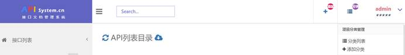
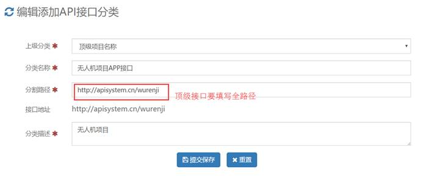
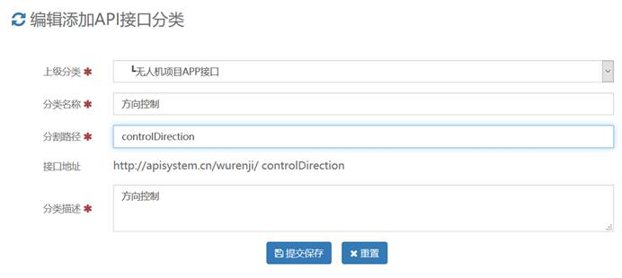
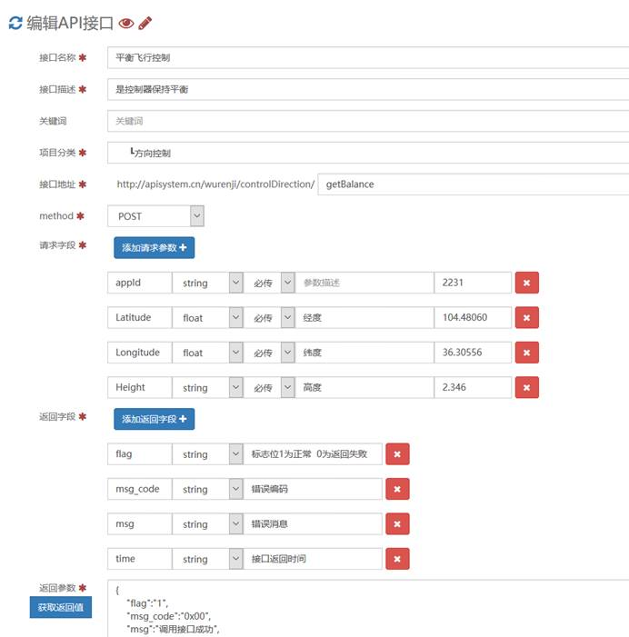
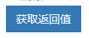

目录
ApiSystem是什么？解决什么问题？
APISystem文档管理系统是一个开源API接口文档管理系统， ApiSystem将原来用word编写API文档流程中解放出来，只需要按照填写文本框即可生成接口文档，管理文档也很轻松，同时还可以配置可见及所得的调试工具， API接口也可以一键导出word文档让你既可以在线分权限分享也可线下分享，是中小企业IT团队开发的福音。
ApiSystem接口管理系统开发与2004年，经过几次迭代2005年形成一个稳定形态与大家见面。
ApiSystem基于ThinkPHP3.2和OneThink开发，简单实用，希望让开发更加快捷高效。
ApiSystem遵循Apache2开源协议发布，并提供免费使用。
交流QQ群 577693968 交流QQ群2 460098419
Author: Texren QQ: 174463651
Smith77 QQ: 3246932472
1) ApiSystem未做可视化安装，
2) 目录结构完全按照oneThink部署，需要将Runtime，Public设为可写，
3) 数据库：直接将压缩包中sql语句导入数据库，
4) 数据库连接修改Application ->Common->config.php 其中的数据库名和密码，user数据库连接中不需要修改已经做了兼容
1) 后台管理地址http://apisystem.cn/index.php?s=/Admin/Public/login.html
2) 后台默认用户和密码admin/123456
3) 用户权限分类，默认关闭用户注册功能用户可以从后台添加
注册会员 没有功能,没有前台和后台API接口功能
系统管理员 拥有后台和前台所有功能,admin是超级管理员
接口维护员 部分后台功能有前台读写功能
前端使用者 无前台功能，前台只读
4) 其他设置可以根据情况自行处理
正确的顺序：
添加顶级分类-> 添加一级分类 -> 添加接口 -> 保存接口 -> 编辑获取返回值
1) 分类是这样
访问地址格式为: http://ip:port/module/controller/method
module为模块名 controller为控制器名 method为方法名
顶级分类地址为接口所在目录
二级分类地址到控制器页面
三级为接口地址 为方法名
2) 添加分类

3) 添加顶级接口分类

4) 添加页面级分类，分类只需要填写页面名

5) 添加具体接口

主要是对接口调试，这个按钮做的服务，将API调试变得简单起来。
基本原理是通过Ajax把接口请求字段值发送给接口地址，在php的curl获取服务器接口返回值输出到返回参数中。其中需要修改如下文件，文件中有详细注释
Application/Docapi/Controller/PoststrController.class.php
目录结构
wwwroot
├─index.php 入口文件
├─Addons 插件目录
├─Application 应用模块目录
│ ├─Docapi 接口管理模块源码
│ ├─Admin 后台模块
│ ├─Common 公共模块目录（不能直接访问）
│ ├─Home 前台模块
│ └─User 用户模块（不能直接访问）
├─Public 应用资源文件目录
├─Runtime 应用运行时目录（需要写权限）
├─ThinkPHP 框架目录
└─Uploads 上传根目录（需要写权限）
感谢Texren和Smith77的多年不懈努力，使得这个这个版本能够最终发布
感谢ThinkPHP提供优秀国产php开源框架
感谢Onethink提供开源Tp demo系统